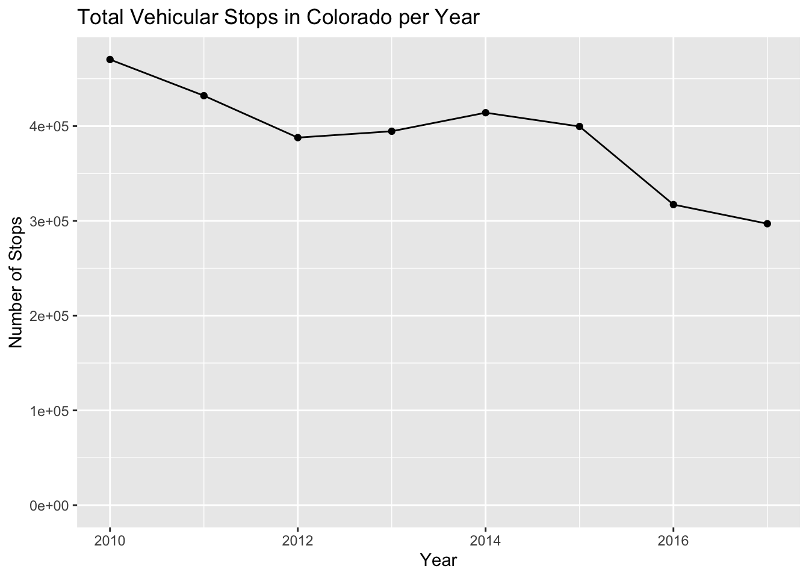
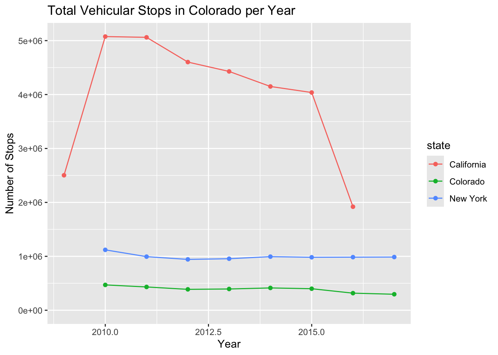

con_traffic <- DBI::dbConnect(
RMariaDB::MariaDB(),
dbname = "traffic",
host = Sys.getenv("TRAFFIC_HOST"),
user = Sys.getenv("TRAFFIC_USER"),
password = Sys.getenv("TRAFFIC_PWD")
)SQL
The task
For today’s project, I will be working with data from the Stanford Open Policing Project pubished by Pierson, et al. 2020. “A Large-Scale Analysis of Racial Disparities in Police Stops Across the United States.” Nature Human Behaviour, 1–10. I will be investigating a few of the many tables contained within the database.
First, let’s set up the connection to the traffic database.
library(tidyverse)
library(DBI)Let’s have a look at all of the tables that are in the traffic database, so we know what we are working with.
DBI::dbListTables(con_traffic) [1] "ar_little_rock_2020_04_01" "az_gilbert_2020_04_01"
[3] "az_mesa_2023_01_26" "az_statewide_2020_04_01"
[5] "ca_anaheim_2020_04_01" "ca_bakersfield_2020_04_01"
[7] "ca_long_beach_2020_04_01" "ca_los_angeles_2020_04_01"
[9] "ca_oakland_2020_04_01" "ca_san_bernardino_2020_04_01"
[11] "ca_san_diego_2020_04_01" "ca_san_francisco_2020_04_01"
[13] "ca_san_jose_2020_04_01" "ca_santa_ana_2020_04_01"
[15] "ca_statewide_2023_01_26" "ca_stockton_2020_04_01"
[17] "co_aurora_2023_01_26" "co_denver_2020_04_01"
[19] "co_statewide_2020_04_01" "ct_hartford_2020_04_01"
[21] "ct_statewide_2020_04_01" "fl_saint_petersburg_2020_04_01"
[23] "fl_statewide_2020_04_01" "fl_tampa_2020_04_01"
[25] "ga_statewide_2020_04_01" "ia_statewide_2020_04_01"
[27] "id_idaho_falls_2020_04_01" "il_chicago_2023_01_26"
[29] "il_statewide_2020_04_01" "in_fort_wayne_2020_04_01"
[31] "ks_wichita_2023_01_26" "ky_louisville_2023_01_26"
[33] "ky_owensboro_2020_04_01" "la_new_orleans_2020_04_01"
[35] "ma_statewide_2020_04_01" "md_baltimore_2020_04_01"
[37] "md_statewide_2020_04_01" "mi_statewide_2020_04_01"
[39] "mn_saint_paul_2020_04_01" "mo_statewide_2020_04_01"
[41] "ms_statewide_2020_04_01" "mt_statewide_2023_01_26"
[43] "nc_charlotte_2020_04_01" "nc_durham_2020_04_01"
[45] "nc_fayetteville_2020_04_01" "nc_greensboro_2020_04_01"
[47] "nc_raleigh_2020_04_01" "nc_statewide_2020_04_01"
[49] "nc_winston_salem_2020_04_01" "nd_grand_forks_2020_04_01"
[51] "nd_statewide_2020_04_01" "ne_statewide_2020_04_01"
[53] "nh_statewide_2020_04_01" "nj_camden_2020_04_01"
[55] "nj_statewide_2020_04_01" "nv_henderson_2020_04_01"
[57] "nv_statewide_2020_04_01" "ny_albany_2020_04_01"
[59] "ny_statewide_2020_04_01" "oh_cincinnati_2020_04_01"
[61] "oh_columbus_2020_04_01" "oh_statewide_2020_04_01"
[63] "ok_oklahoma_city_2023_01_26" "ok_tulsa_2020_04_01"
[65] "or_statewide_2020_04_01" "pa_philadelphia_2020_04_01"
[67] "ri_statewide_2020_04_01" "sc_statewide_2020_04_01"
[69] "sd_statewide_2020_04_01" "tn_nashville_2020_04_01"
[71] "tn_statewide_2020_04_01" "tx_arlington_2020_04_01"
[73] "tx_austin_2020_04_01" "tx_garland_2020_04_01"
[75] "tx_houston_2023_01_26" "tx_lubbock_2020_04_01"
[77] "tx_plano_2020_04_01" "tx_san_antonio_2023_01_26"
[79] "tx_statewide_2020_04_01" "va_statewide_2020_04_01"
[81] "vt_burlington_2023_01_26" "vt_statewide_2020_04_01"
[83] "wa_seattle_2020_04_01" "wa_statewide_2020_04_01"
[85] "wa_tacoma_2020_04_01" "wi_madison_2023_01_26"
[87] "wi_statewide_2020_04_01" "wy_statewide_2020_04_01" SELECT * FROM co_statewide_2020_04_01 LIMIT 8;| raw_row_number | date | time | location | county_name | subject_age | subject_race | subject_sex | officer_id_hash | officer_sex | type | violation | arrest_made | citation_issued | warning_issued | outcome | contraband_found | search_conducted | search_basis | raw_Ethnicity |
|---|---|---|---|---|---|---|---|---|---|---|---|---|---|---|---|---|---|---|---|
| 1947986|1947987 | 2013-06-19 | NA | 19, I70, 8 | Mesa County | 26 | hispanic | male | b942632983 | male | vehicular | Driver’s Vision Obstructed Through Required Glass|Drove Vehicle When Safety Belt Not in Use | 0 | 1 | 0 | citation | NA | 0 | NA | H |
| 1537576 | 2012-08-24 | NA | 254, H285, 11 | Jefferson County | NA | NA | NA | f3d4f46927 | NA | vehicular | NA | 0 | 0 | 0 | NA | NA | 0 | NA | NA |
| 1581594 | 2012-09-23 | NA | 115, I76, 13 | Logan County | 52 | white | male | 6e49e2fbc8 | male | vehicular | Speeding (10-19 MPH Over the Maximum 75 MPH Limit) | 0 | 0 | 1 | warning | NA | 0 | NA | W |
| 1009205 | 2011-08-25 | NA | 197, H85, 47 | Douglas County | 32 | white | female | eaea851669 | NA | vehicular | Speeding (10-19 MPH Over Prima Facie Limit *) | 0 | 1 | 0 | citation | NA | 0 | NA | W |
| 1932619 | 2013-06-08 | NA | 107, H287, 45 | Kiowa County | 33 | hispanic | male | d18e34d749 | male | vehicular | Failed to Drive in Single Lane (Weaving) | 0 | 0 | 1 | warning | NA | 0 | NA | H |
| 1179436 | 2011-12-23 | NA | 48, 384, 7 | Boulder County | NA | NA | NA | b84c696aed | NA | vehicular | NA | 0 | 0 | 0 | NA | NA | 0 | NA | NA |
| 1326795 | 2012-04-07 | NA | 0, R2500, 7 | Boulder County | 39 | white | male | 4c0279748e | male | vehicular | Speeding (10-19 MPH Over Prima Facie Limit *) | 0 | 1 | 0 | citation | NA | 0 | NA | W |
| 1786795 | 2013-03-03 | NA | 19, E470, 10 | Arapahoe County | 44 | white | female | e6b5b9bb98 | male | vehicular | Failed to Drive in Single Lane (Weaving) | 0 | 0 | 1 | warning | NA | 0 | NA | W |
As I am from Colorado, I am curious to look more specifically at the state and how vehicular stops compare between some states I might want to live in (namely, Colorado, California, and New York).
First, I’d like to make a plot to show how vehicular stops have changes over the years in these three states.
SELECT
YEAR(date) AS year,
COUNT(*) AS total_stops
FROM co_statewide_2020_04_01
WHERE type = 'vehicular'
GROUP BY YEAR(date)
ORDER BY YEAR(date);| year | total_stops |
|---|---|
| NA | 3 |
| 2010 | 470284 |
| 2011 | 432101 |
| 2012 | 387860 |
| 2013 | 394583 |
| 2014 | 414157 |
| 2015 | 399619 |
| 2016 | 317213 |
| 2017 | 297033 |
co_stops_per_year <- dbGetQuery(
con_traffic,
"
SELECT
YEAR(date) AS year,
COUNT(*) AS total_stops
FROM co_statewide_2020_04_01
WHERE type = 'vehicular'
GROUP BY YEAR(date)
ORDER BY YEAR(date);
"
)ggplot(co_stops_per_year, aes(x = year, y = total_stops)) +
geom_line() +
geom_point() +
labs(
title = "Total Vehicular Stops in Colorado per Year",
x = "Year",
y = "Number of Stops"
)
Now, I am going to try to UNION all three tables (co_statewide, ca_statewide, and ny_statewide), so that I can see how the states differ in their number of vehicular stops over the past few years.
co_ca_ny_stops_per_year <- dbGetQuery(
con_traffic,
"
SELECT
'Colorado' AS state,
YEAR(date) AS year,
COUNT(*) AS total_stops
FROM co_statewide_2020_04_01
WHERE type = 'vehicular'
GROUP BY state, YEAR(date)
UNION ALL
SELECT
'California' AS state,
YEAR(date) AS year,
COUNT(*) AS total_stops
FROM ca_statewide_2023_01_26
WHERE type = 'vehicular'
GROUP BY state, YEAR(date)
UNION ALL
SELECT
'New York' AS state,
YEAR(date) AS year,
COUNT(*) AS total_stops
FROM ny_statewide_2020_04_01
WHERE type = 'vehicular'
GROUP BY state, YEAR(date)
ORDER BY year, state;
"
)ggplot(co_ca_ny_stops_per_year, aes(x = year, y = total_stops, color=state)) +
geom_line() +
geom_point() +
labs(
title = "Total Vehicular Stops in Colorado per Year",
x = "Year",
y = "Number of Stops"
)
References
Pierson, E., Simoiu, C., Overgoor, J. et al. A large-scale analysis of racial disparities in police stops across the United States. Nat Hum Behav 4, 736–745 (2020).